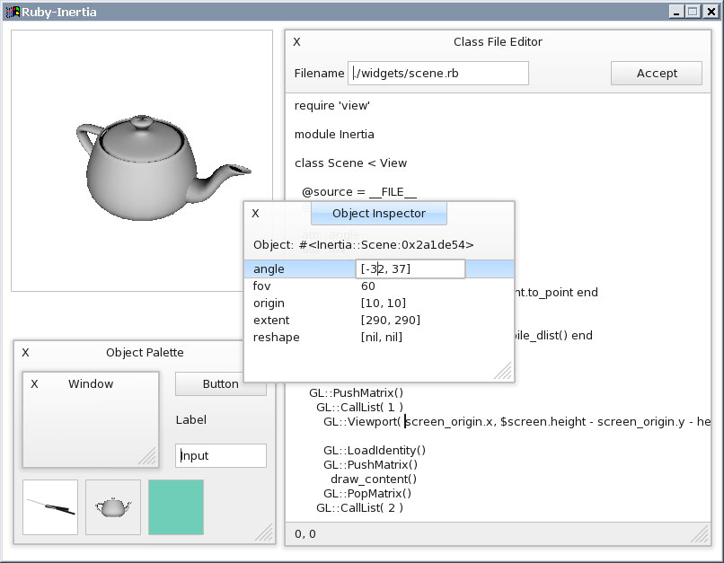

Home > Interface Design > Inertia > Ruby Inertia
Inertia is a live user interface environment similar to Squeak
and Self, in that there is no distinction
between edit and runtime program modes. Prototypes have been written in C++,
Io, Dylan, and now Ruby. It's a research project, so new ideas are being prototyped
and explored. But it also has the goal of being very usable. Simplicity is one
of the major goals.
Files
| Presentation PowerPoint 2000 • 4.25 MB |
Presentation PDF• 640 KB |
Video Demo 1 Cinepak AVI • 5.9 MB |
Video Demo 2 Cinepak AVI • 6.0 MB |
ruby-inertia-0.6.zip Source + EXE • 4.0 MB |
Screen shots

Inspiration
http://research.sun.com/self
http://www.squeak.org
http://www.cliki.net/CLIM
http://www.cooperatingsystems.com
http://www.guidebookgallery.org
http://www.nooface.com
http://en.wikipedia.org/wiki/MVC
The
Art and Science of Smalltalk, 1995
C++
Programming with MacApp, 1990
Learning
Cocoa, 2001
Ruby
in a Netshell, 2002
Smalltalk
by Example, 1997
The
X Window System in a Nutshell, 1992
The
BeOS Bible, 1999